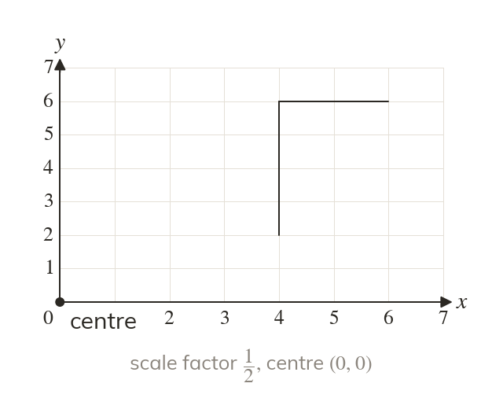
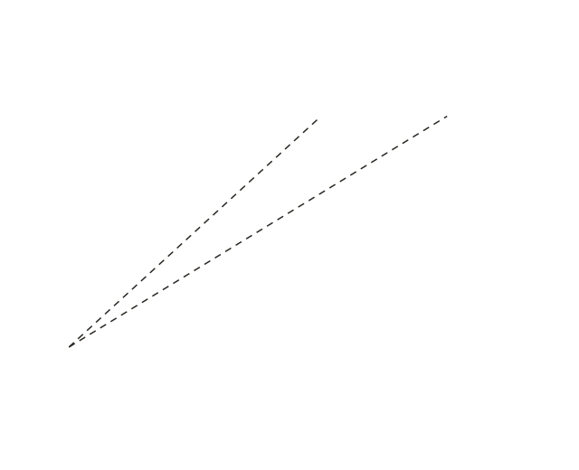
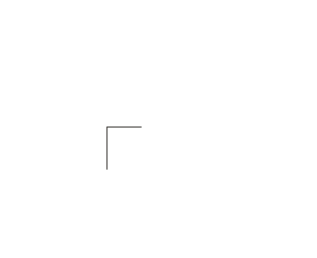

Smaller is still an enlargement
A scale factor between and makes the image smaller. It is still called an enlargement. Every length and every distance from the centre is multiplied by it.
A scale factor between and makes the image smaller, but it is still called an enlargement. Every length, and every distance from the centre, is multiplied by it.